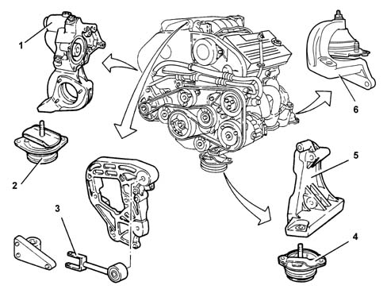

Composition
- Path
- Descriptions > 10 ENGINE > 1008 POWER UNIT SUPPORTS > Composition
- Kind
- system description
- Applies to
- engines: 3.0 V6, 3.2 V6; all production periods
- Interactive page
- https://sloeber94.github.io/elrnDB-lThss/en/#/613129
Applies to: engines: 3.0 V6, 3.2 V6; all production periods
STRUCTURE
The engine is connected at the top to the bodyshell by means of a reaction rod in order to contain jolting.

- 1. Power unit rigid rear support.
- 2. Power unit rigid rear support flexible mounting.
- 3. Power unit reaction rod.
- 4. Power unit rigid front support flexible mounting.
- 5. Rigid engine support, timing side.
- 6. Power unit rigid rear support, gearbox side.